今
2020.10 プログラミングアート
TwitterAPIを活用した”今”を可視化するデジタルサイネージ
ProcessingとTwitterを連動させて、リアルタイムで取得した情報を使ったワークデモです。
"今”という文字が含まれたツイートを現在の時刻とともに表示します。
今、まさに日本のどこかで誰かがこんなことをしている、という事実によって、何気ないツイートが何かより質感を増して感じられます。
 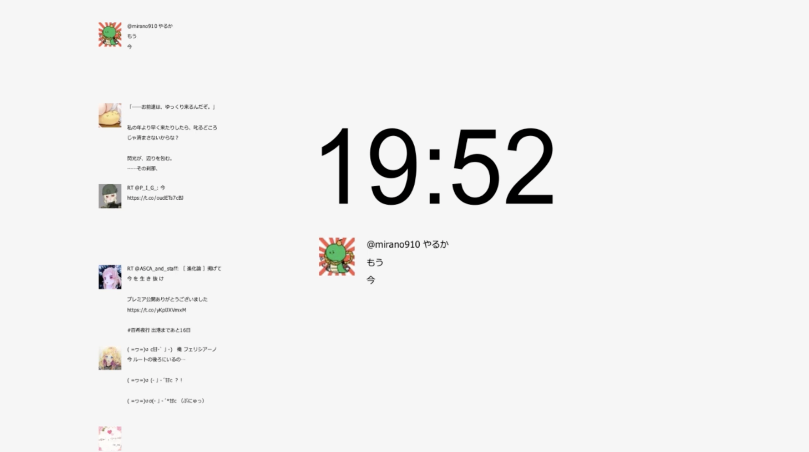
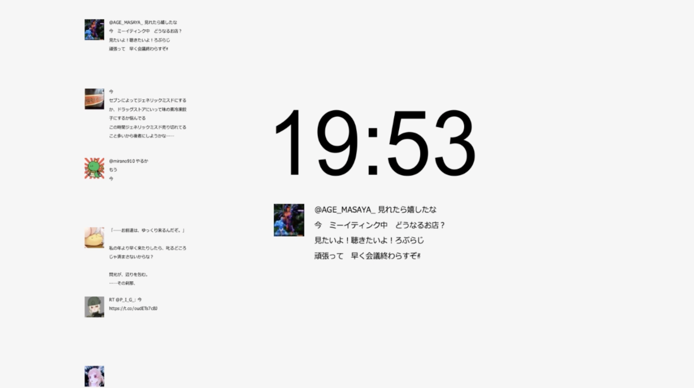
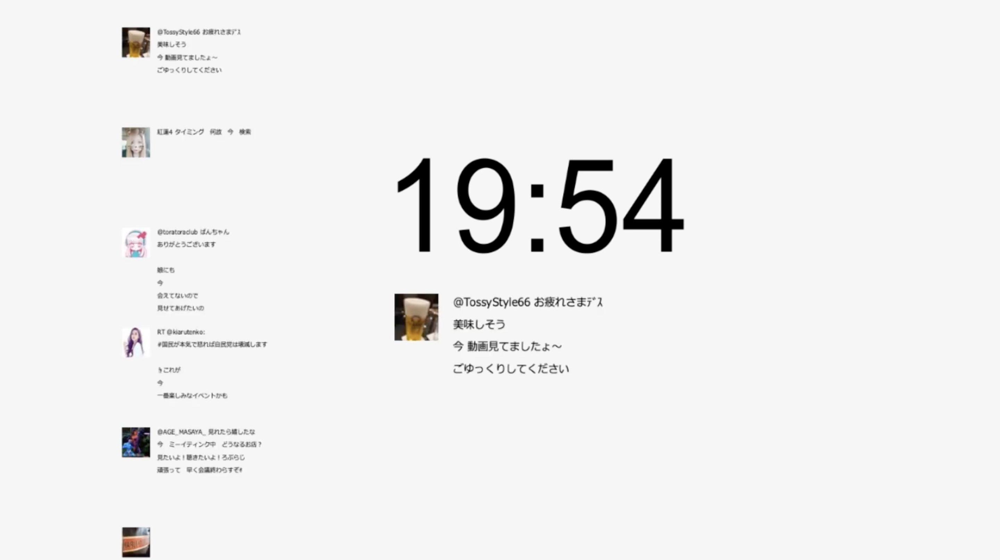
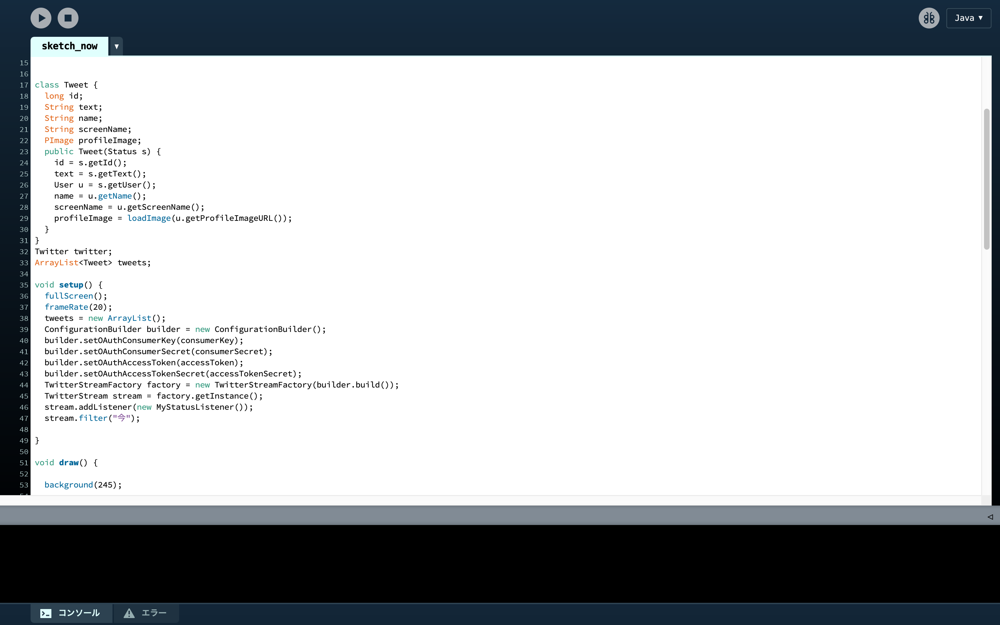
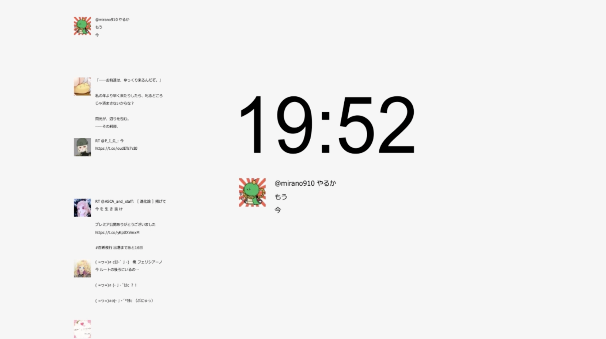
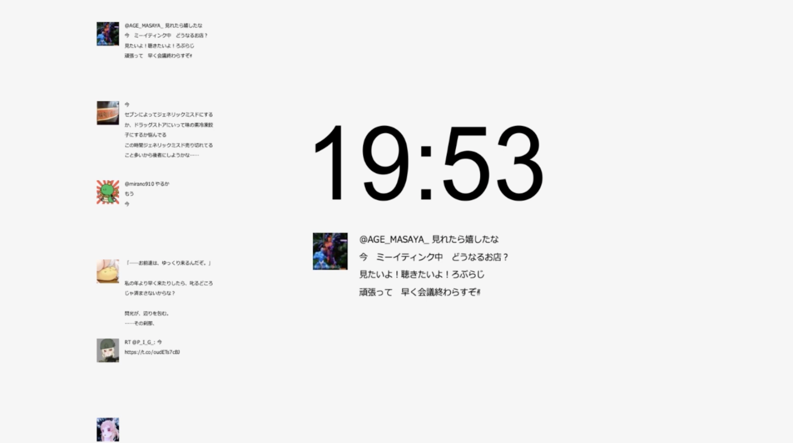
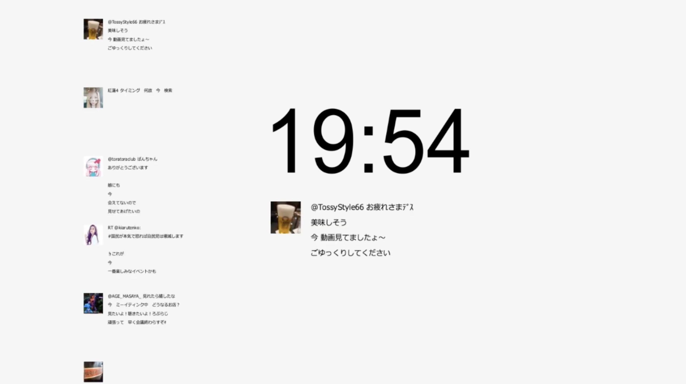
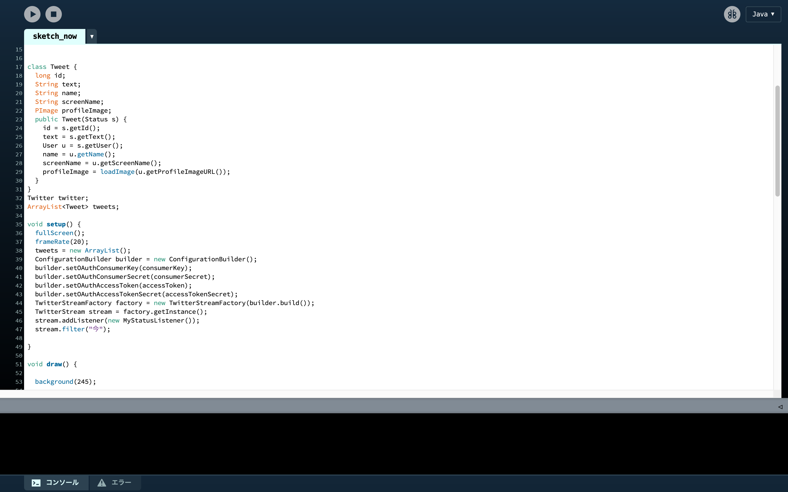
2020.10 プログラミングアート
ProcessingとTwitterを連動させて、リアルタイムで取得した情報を使ったワークデモです。
"今”という文字が含まれたツイートを現在の時刻とともに表示します。
今、まさに日本のどこかで誰かがこんなことをしている、という事実によって、何気ないツイートが何かより質感を増して感じられます。
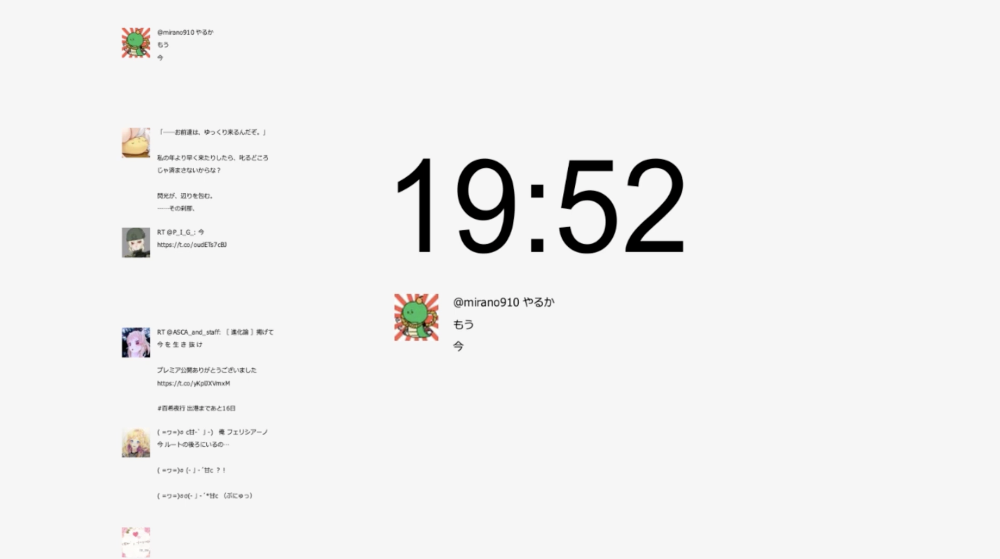
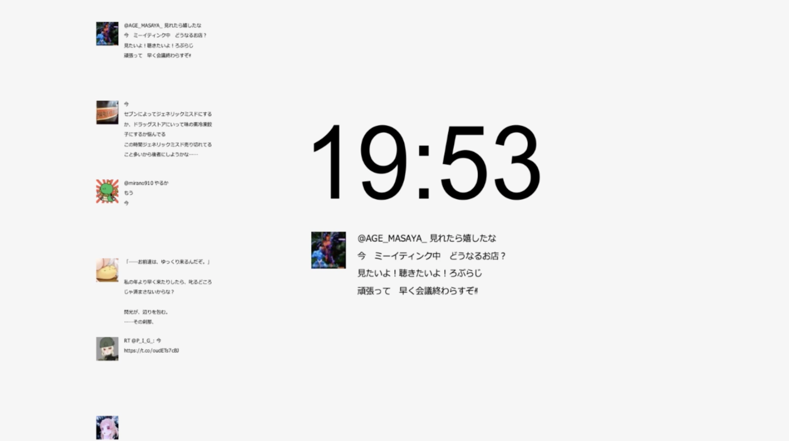
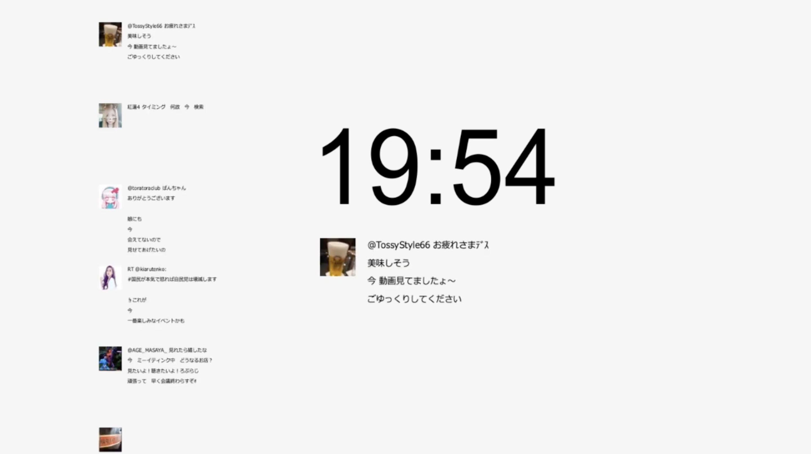
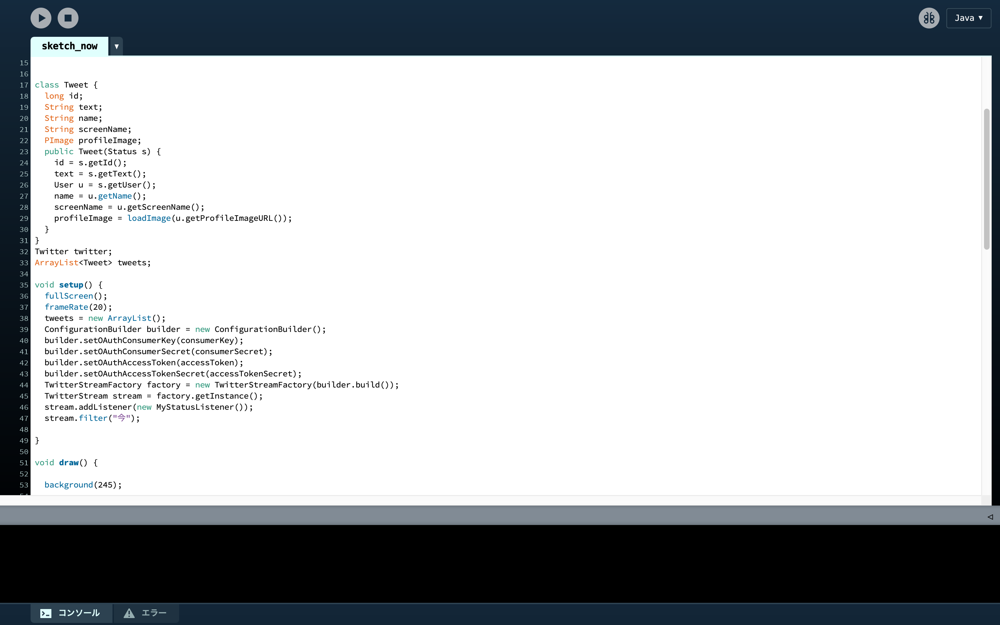